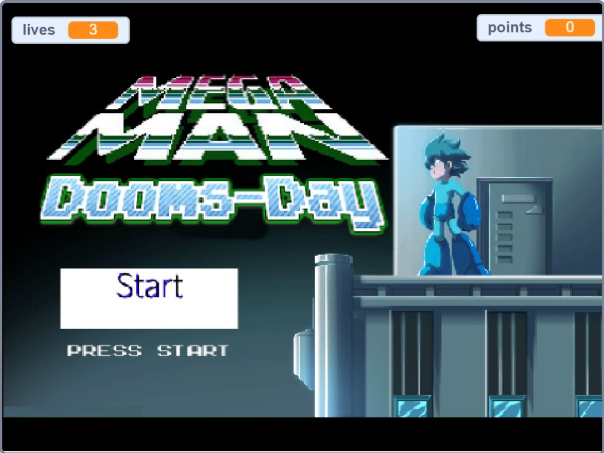
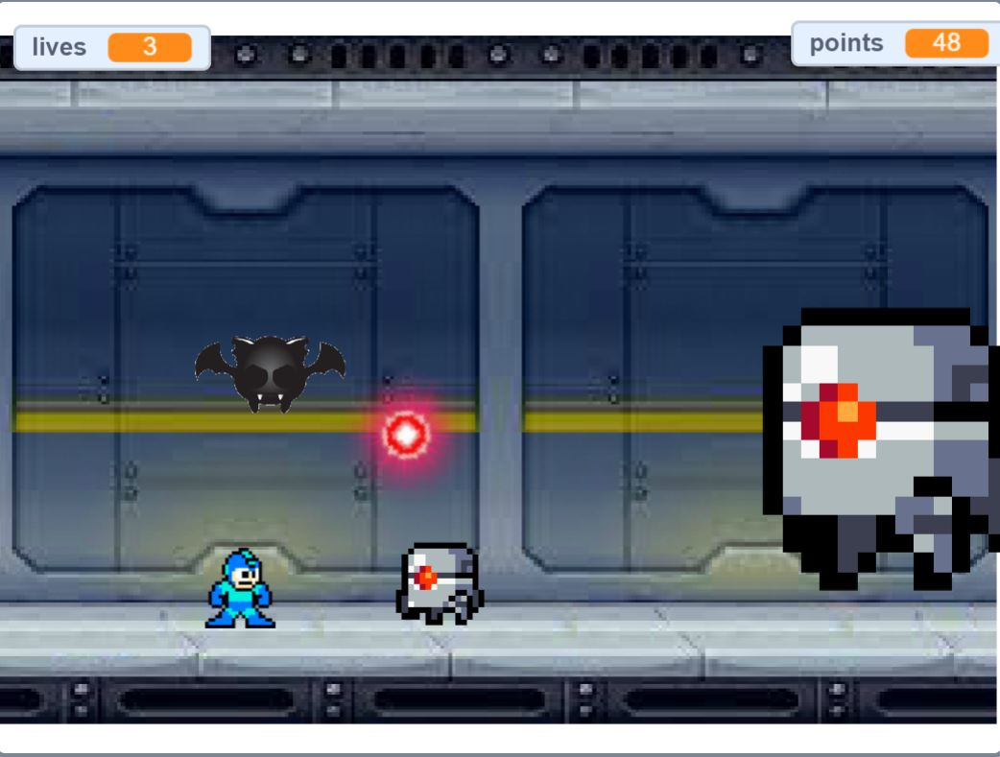
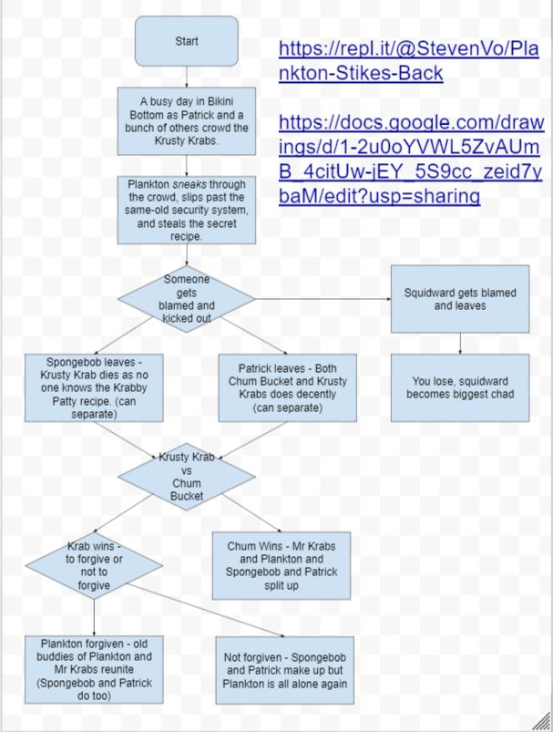

Portfolio
This is my Python Story!
MegaMan: Dooms-Day
 This is my game!
Description:
Megaman is stuck in a factory and he must make his way out by beating the monsters that come his way. The scoring system is based off on how long the player is able to survive while also getting hits in on the boss. The randomness factor comes from the spawn times of each enemy sprite whether it be the actual enemy or the shots being fired. The difficulty change comes from the range of spawn times which is lowered which happens to correlate with the randomness factor. The game ends when the player gets hit by either the enemy or pellets for three times, each knocking out a life.
Reflection:
We decided to make this game because we believed a fun game was difficult was also maintaining a lot of focus. Our original intent was lots of movement and possibly a bullet hell game. The first successful point in the development process of our game was the movement animation which allowed a relatively flowing movement. The second successful point in the development process of our game was the actual movement aspect of each sprite. The first obstacle in the development process was overcoming the problem where a sprite would take too many lives at once. We overcame this with the idea that is basically invincibility frames after getting hit. The second obstacle in the development process was overcoming the problem where the player's bullet would be really glitchy with the direction it was travelling. We overcame this problem by making the variables independent and simpler. If there was more time and resources, the many glitches and bugs that can be clearly seen would be fixed. Also there was a lot more in store but the idea was too ambitious for that short of time. Also, some parts like the instructions were somehow deleted and could be added back.
Important Algorithm

This is an algorithm because it is a set of rules or steps to complete the task, which happens to be movement. It starts the player hidden in position until the START button is clicked and it will control the player's movement aspect. The left and right movement is self explanatory but the vertical movement utilizes the gravity aspect to allow jumping and falling.
More Blocks

Plankton Strikes Back!
Plankton has been lonely lately and decides he won't be alone if he has lots of customers... Plankton makes an elaborate plan and successfully steals the Krabby Patty recipe, which leaves the Krusty Krab in lots of trouble! What will happen to the three Krusty Krab employees?...
The incremental and iterative development process of our program was the repetitive running through the program each time a new scene was added. Each check was performed to confirm speed and quality in order to ensure an enjoyable experience for the reader. If anything took too long, the typing speed would be faster while if there needed to be more pauses, typing can be slower or ellipses would be added. Otherwise, the scenes were preorganized, revised, and tested to check for any bugs or weird spacing. An opportunity that we encountered was the utilization of the typing function to create a retro, game-y feeling. I incorporated the rhetorical device aposiopesis and made the typing slower along with the ellipses to create dramatic pauses and invoke emotion for the audience.
Organizing scenes into functions is a form of procedural extraction because it makes it simple to separate parts of the story and only have to worry about connecting them which removes the task of having to edit parts of the whole story within a large text box rather than editing small chunks easily. A story that I read was about a person who arrived at a village that seemed to be poisoned. I thought it was interesting because even though each scene was pretty short, there were still many options to go through.